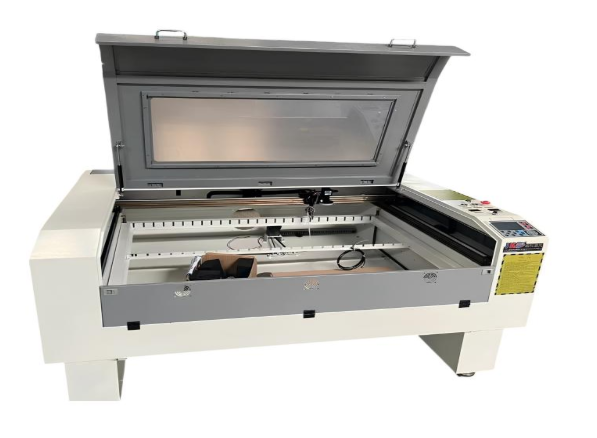
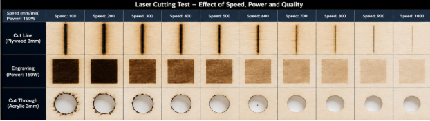
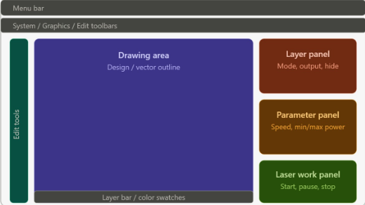
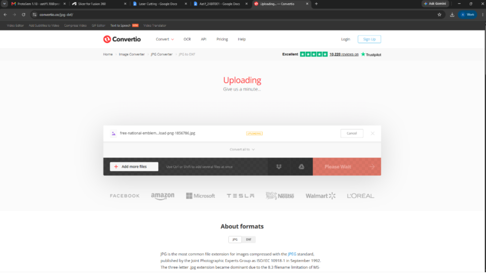
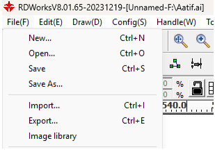
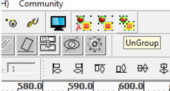
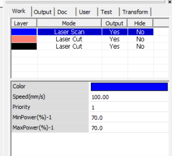
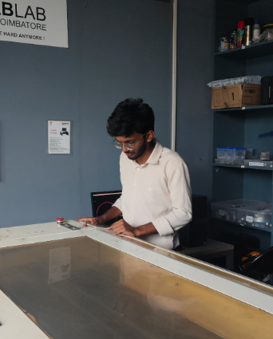
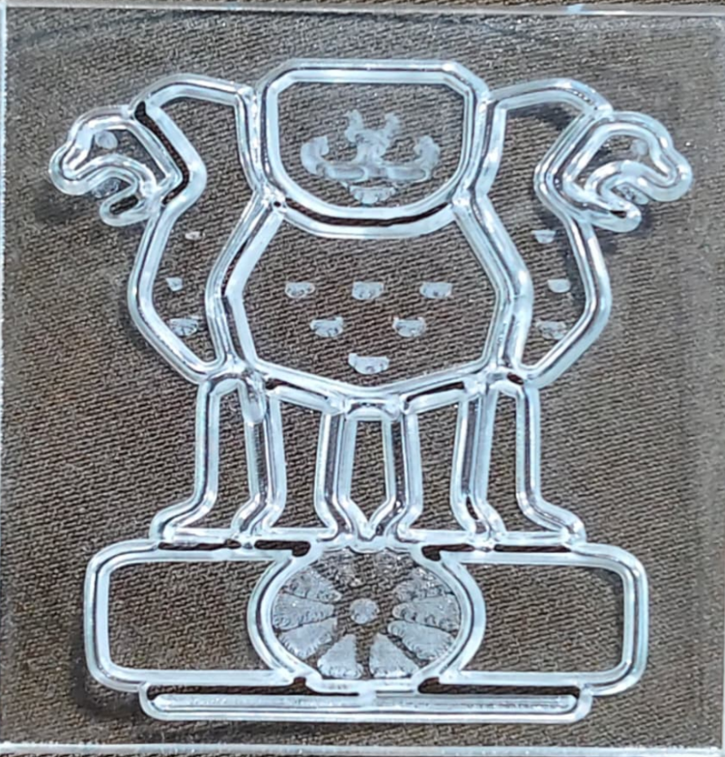

01 / What is Laser Cutting?
Laser cutting is a digital fabrication process where a focused laser beam is used to cut or engrave a material.
Instead of manually cutting the design, we prepare the design digitally and the machine follows those paths automatically.
02 / The Machine
In our lab, I worked with a 1490 CO₂ Laser Cutter. Before using it, I learned its basic operation and safety requirements.
1300 × 900 mm
150 W
0.1 mm
Acrylic, plywood, MDF, cardboard and paper

03 / One Important Thing I Learned
Laser cutting is not simply about pressing a button. The speed and power of the laser affect the final result.
A slower speed generally allows the laser to cut deeper, while a faster speed produces a shallower cut. The correct settings also depend on the material and its thickness.

04 / How Does the Machine Know What to Cut?
This is where RDWorks V8 comes in.
RDWorks is the software I used to prepare the digital design before sending it to the laser cutter.
In RDWorks, I learned to:
• Import the design
• Position the design
• Check the cutting paths
• Set laser parameters
• Decide which parts should be cut or engraved
• Send the final file to the machine

05 / What Did I Actually Do?
Here is my complete process, explained step-by-step.
Choose the Design
I started with an image that I wanted to convert into a laser-cut design.

Convert it to DXF
The image was converted into DXF format so that it could be used as CAD geometry.

Import into RDWorks
I imported the DXF design into RDWorks and checked whether the geometry had transferred correctly.

Separate the Parts
I separated the different parts of the design so that each section could be controlled individually.

Set Cut & Engrave
I selected the outer outline for cutting and the internal details for scanning/engraving.

Send it to the Laser Cutter
After checking the paths and settings, I exported the prepared file and sent it to the laser cutter.

06 / From Digital to Physical
The laser followed the paths prepared in RDWorks and produced the design on the material.
This was the most interesting part for me — seeing a design that existed digitally become an actual physical object.

07 / What I Learned
How laser cutting works
How speed and power affect the result
How to prepare designs in RDWorks
How digital designs become physical objects
Basic machine safety and preparation
Understanding computer-controlled fabrication
08 / The Takeaway
Week 4 gave me my first practical experience with laser cutting. I learned that the process starts long before the laser turns on — the design, software, parameters and machine settings all matter.
Most importantly, I learned how a digital idea can move through a software workflow and finally become a real physical product.
← BACK TO PROTOSEM